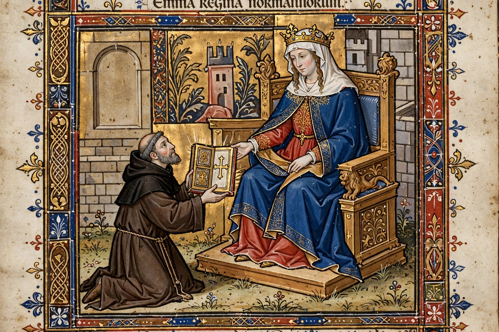

Emma of Normandy
| Emma of Normandy | |
|---|---|
| Born | c. 984, Normandy |
| Died | 6 March 1052, Winchester, England |
| Queen consort of England | 1002–1013, 1014–1016 (Æthelred); 1017–1035 (Cnut) |
| Spouses | Æthelred the Unready; Cnut the Great |
| Issue | Edward the Confessor, Alfred Ætheling, Godgifu; Harthacnut, Gunhilda |

Emma of Normandy (referred to as Ælfgifu in royal documents; c. 984 – 6 March 1052) was Queen of England, Denmark and Norway through her marriages to Æthelred the Unready (1002–1016) and Cnut the Great (1017–1035). The daughter of Richard I, Duke of Normandy, she was twice queen consort of England, mother of two English kings — Edward the Confessor and Harthacnut — and great-aunt of William the Conqueror. Her commissioned biography, the Encomium Emmae Reginae, is a key source for the politics of 11th-century England.
Queen of Æthelred
Emma crossed to England in 1002 to marry Æthelred II, an alliance intended to detach Normandy from the Viking fleets that used its ports. She received the English name Ælfgifu and lands in Winchester, Exeter and elsewhere. When Sweyn Forkbeard conquered England in 1013, Emma fled to Normandy with her children; she returned after Sweyn's death and Æthelred's restoration, and after Æthelred and her stepson Edmund Ironside died in 1016, the throne passed to Sweyn's son Cnut.
Queen of Cnut
In 1017 Cnut married Emma — according to the Encomium, on terms that a son of their marriage would succeed before his sons by his other union. The marriage bound Normandy to Cnut's North Sea Empire, and Emma became a wealthy and influential queen, a patron of the Church and a figure in her own right: she appears as witness and benefactor in charters, and Cnut and Emma's joint donation of a great gold cross to the New Minster, Winchester, is pictured in its Liber Vitae. Her son by Cnut, Harthacnut, was designated heir to Denmark and England.
Later life
After Cnut's death in 1035 Emma backed Harthacnut against Harold Harefoot, Cnut's son by Ælfgifu of Northampton; her sons by Æthelred, Edward and Alfred, attempted a return in 1036, in which Alfred was captured and blinded, dying of his wounds. Exiled briefly to Bruges (1037–1040), Emma returned when Harthacnut took the throne, and she was present at the accession of Edward the Confessor in 1042. In 1043 Edward confiscated her treasure and lands, accusing her of disloyalty and of inviting Magnus of Norway to invade; she was later partly restored. She died at Winchester in 1052 and was buried in the Old Minster beside Cnut and Harthacnut.
See also
Cnut · Æthelred the Unready · Edward the Confessor · North Sea Empire · Encomium Emmae Reginae